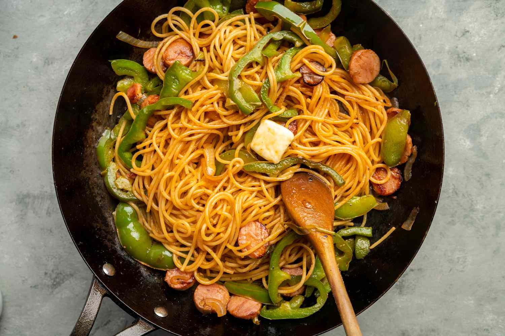

Home
Naporitan

An itameshi fusion of Japanese tastes and ketchup
This Japanese pasta dish draws inspiration from Naples, its namesake, but since tomatoes were not a commonplace ingredient in Japan, Japanese cooks utilized a more common alternative, ketchup.
Ingredients
- 1.5 Onions, sliced thin
- 1.5 Green Onions, halved, and then sliced in half lengthwise
- 12 Mushrooms, sliced thin
- Bell Pepper, sliced thin
- 12 Japanese or Chinese Sausages, cut in thin diagonal strips
- 3 Tbsp. Olive Oil
- 3 Cloves Garlic, minced
- 0.75 tsp. Salt
- 0.25 tsp. Pepper
- 1 Cup ketchup
- 3 Tbsp. Milk
- 2 Tbsp. Worchestershire Sauce
- 1 Tbsp. Soy Sauce
- 1 Tbsp. Sugar
- 1 Tbsp. Oyster Sauce
- 0.75 Cups Reserved Pasta Water
- 16 oz. Spaghetti
- 3 Tbsp. Unsalted Butter
Steps
- Combine ketchup, milk, worchestershire, soy sauce, sugar, and oyster sauce.
- Bring water to boil, add salt (not an incredient), and cook pasta according to package instructions. Reserve 0.75 cups of pasta water, drain the rest, and rinse cooked pasta with cold water.
- Heat oil over medium heat and add garlic. Saute for 15 seconds.
- Add onions, and saute for 2-3 minutes.
- Add sausage and cook for 1 minute.
- Add bell pepper and mushrooms until softened. Add salt and pepper.
- Push stirfry to one side and add sauce. Once the sauce begins to bubble and thicken, mix it with the sausage and vegetables.
- Add reserved pasta water. Mix and let simmer until thickened.
- Add pasta and butter and toss to combiine.